Analítica de Datos
Muestreo y Encuestas
Carlos Cardona Andrade
Tabla de contenido
Un poco sobre
Muestreo
Poblacipon y Muestras

Muestras
Toma
menos tiempoque seleccionar a cada ente de la población.Es
menos costosoque seleccionar cada ente de la población.Es
imposiblerecolectar datos de toda la población
Tipos de muestras
- No probabilística
- Muestreo por conveniencia
- Muestreo de respuesta voluntaria
- Probabilística
- Muestreo simple
- Muestre estratificado
- Muestreo por conglomerado
- Muestre en múltiples etapas
Malos ejemplos de muestreo
- Muestreo por conveniencia: consiste en tomar muestras de aquellos que son fácilmente accesibles.
- Ejemplo: encuesta al “hombre en la calle” (barata, conveniente, popular en el “periodismo” televisivo).
- Problema: los resultados pueden variar significativamente según el “cuándo y dónde” se realice la encuesta; falta de representatividad.
Malos ejemplos de muestreo
- Muestreo de respuesta voluntaria:
- Ejemplo: encuestas en internet, encuestas telefónicas.
- Solo las personas que visiten el sitio web o vean el programa serán muestreadas.
- Las personas con opiniones fuertes son más propensas a participar.
Muestreo Simple
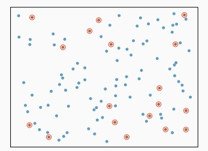
Idea básica: colocar los nombres en una caja, agitar bien y sacar nombres al azar de la caja.
Se necesita una lista de nombres de todos los sujetos de la población, llamada marco muestral.
Todos los sujetos tienen la misma probabilidad de ser elegidos.
Muestreo Simple
Pros: La composición de la muestra reflejará la composición de la población (edad/género/raza/ingresos…).
Contras: La necesidad de un marco muestral lo hace poco práctico para poblaciones grandes
Muestreo Simple en R
- x - vector or a data set.
- size - sample size.
- replace - with or without replacement of values.
- prob - probability weights
Muestreo Simple en R
# la muestra esta entre 1 y 5. El numero de muestras es 3
x<- sample(1:5, 3)
# veamos las 3 muestras
x[1] 4 3 5Error in sample.int(length(x), size, replace, prob): cannot take a sample larger than the population when 'replace = FALSE'[1] 4 3 5#especificar replace=TRUE o T permitirá repeticiones de valores para que se puedan generar las 6 muestras
x<- sample(1:5, 6, replace=T)
x[1] 4 5 3 3 3 1Muestreo Simple en R
Muestreo Simple en R
Muestreo Simple en R
# creamos una probabilidad de 80% para Bueno y 20% para malo.
sample (c('Bueno','Malo'), size=10, replace=T, prob=c(.80,.20)) [1] "Bueno" "Bueno" "Bueno" "Bueno" "Bueno" "Bueno" "Bueno" "Malo" "Bueno"
[10] "Malo" # Establezcamos otras probabilidades
sample (c('Bueno','Malo'), size=10, replace=T, prob=c(.60,.40)) [1] "Malo" "Malo" "Bueno" "Bueno" "Bueno" "Bueno" "Bueno" "Malo" "Bueno"
[10] "Malo" Muestreo Estratificado
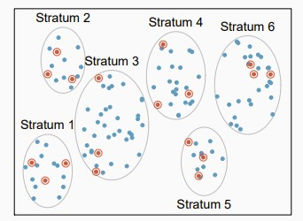
La población se divide en grupos llamados estratos, y luego se elige una muestra aleatoria simple en cada estrato.
Funciona mejor cuando los casos dentro de un estrato son similares, pero existen grandes diferencias entre los estratos.
Inconvenientes: Se necesita un marco muestral para cada estrato, lo cual no es práctico para poblaciones grandes.
Muestreo Estratificado en R
library(tidyverse)
# Creemos la población
data <- data.frame(grupo= rep(c('Profesores', 'Estudiantes', 'Admin', 'Invitados'), each=150), gpa = rnorm(600, mean=90, sd=3))
head(data) grupo gpa
1 Profesores 89.58304
2 Profesores 88.20806
3 Profesores 83.44810
4 Profesores 90.72245
5 Profesores 89.22193
6 Profesores 92.70154# Obtengamos la muestra estratificada
estrat_muestra <- data %>%
group_by(grupo) %>%
sample_n(size=15)
table(estrat_muestra$grupo)
Admin Estudiantes Invitados Profesores
15 15 15 15 Muestreo Estratificado en R
Muestreo por conglomerados
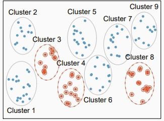
La población se divide en grupos, llamados conglomerados. Se elige una muestra de conglomerados. Todos los sujetos en los conglomerados seleccionados son muestreados.
Por ejemplo, Éxito puede seleccionar un número de tiendas y entrevistar a todos los empleados en las tiendas seleccionadas. Aquí, un conglomerado es una tienda.
El muestreo por conglomerados funciona mejor cuando hay poca variación entre conglomerados, pero una gran variación dentro de los conglomerados.
Muestreo por conglomerados en R
# Generemos la muestra
set.seed(123)
poblacion <- data.frame(
supermercado = paste("Supermercado", 1:1000, sep = "_"),
SatisfaccionCliente = rnorm(1000, mean = 75, sd = 10)
)
# Muestreo por conglomerado
supermercados_elegidos <- sample(poblacion$supermercado, size = 10, replace = FALSE)
muestra <- poblacion[poblacion$supermercado %in% supermercados_elegidos, ]
# Veamos la muestra
head(muestra) supermercado SatisfaccionCliente
203 Supermercado_203 72.34855
225 Supermercado_225 71.36343
255 Supermercado_255 90.98509
354 Supermercado_354 76.16637
457 Supermercado_457 86.10277
554 Supermercado_554 77.49825Muestreo en múltiples etapas
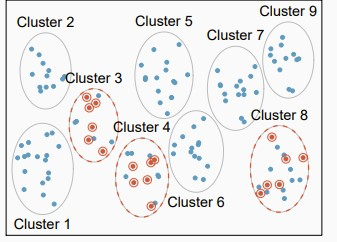
- Primera etapa: la población se divide en grupos, llamados conglomerados, y se elige una muestra de grupos.
- Segunda etapa: los grupos seleccionados se dividen a su vez en subgrupos, y se elige una muestra de subgrupos en cada grupo seleccionado.
- (Tercera etapa: …)
- (Cuarta etapa: …)
Muestreo en múltiples etapas
Muchas encuestas nacionales (como la Encuesta General Social) utilizan muestreo en cuatro etapas.
- departamentos \(\rightarrow\) ciudades \(\rightarrow\) barrios \(\rightarrow\) hogares
Ventaja:
- Los sujetos seleccionados vivirán todos en las ciudades seleccionadas, y no estarán dispersos por todo el país, lo que puede reducir significativamente los costos de viaje de los entrevistadores.
- No es necesario elaborar un marco muestral para los subgrupos no seleccionados.
Muestreo en múltiples etapas en R
# Sample Data Generation
set.seed(123)
region <- data.frame(
Barrio = paste("Barrio", 1:500, sep = "_"),
IngresoMedio = rnorm(500, mean = 50000, sd = 10000)
)
hogares <- data.frame(
Barrio = rep(sample(region$Barrio, size = 500, replace = TRUE),
each = 20),
IDhogar = rep(1:20, times = 500),
TipoEmpleo = sample(c("Ocupado", "Desempleado"), size = 10000, replace = TRUE)
)
# Two-Stage Cluster Sampling
barrios_elegidos <- sample(region$Barrio, size = 5, replace = FALSE)
hogares_muestra <- hogares[hogares$Barrio %in% barrios_elegidos, ]
# Display Sampled Data
head(hogares_muestra) Barrio IDhogar TipoEmpleo
1981 Barrio_302 1 Desempleado
1982 Barrio_302 2 Ocupado
1983 Barrio_302 3 Ocupado
1984 Barrio_302 4 Ocupado
1985 Barrio_302 5 Desempleado
1986 Barrio_302 6 DesempleadoProblemas de muestreo - Sesgo de selección
Una tendencia sistemática por parte del procedimiento de muestreo a excluir un tipo de persona u otro de la muestra se llama sesgo de selección.
- Las personas sin dirección permanente son excluidas por las encuestas por correo.
- Aproximadamente 1/3 de los teléfonos residenciales no están listados. Muestrear números de teléfono de las páginas blancas perdería esos números no listados. Los ricos y los pobres tienen más probabilidades de tener números no listados, por lo que el directorio telefónico tiende hacia la clase media.
- Se ha encontrado que las mujeres tienen más probabilidades de contestar el teléfono que los hombres. Las encuestas telefónicas a menudo incluyen más mujeres que hombres.
- Cuando un procedimiento de selección está sesgado, tomar una muestra grande no ayuda. Esto es solo repetir el mismo errror a una mayor escala.
Problemas de muestreo - Sesgo de no respuesta
El sesgo de no respuesta causa problemas porque los que no responden pueden ser muy diferentes de los que sí responden.
- Los que no responden pueden tener largas horas de trabajo, vivir solos con más probabilidad, o no molestarse en responder, etc.
- Ejemplo: en las últimas décadas, Gallup ha encontrado que los republicanos tenían más probabilidades de responder que los demócratas.
- Cuando la tasa de respuesta es baja, no se puede tomar una nueva muestra para reemplazar a quienes no responden.
- Se debe intentar contactar a los que no responden, haciendo más llamadas/visitas, ofreciendo recompensas, etc.
- Siempre verifique la tasa de respuesta. Si es baja, el resultado de la encuesta podría no ser confiable.
Problemas de muestreo - Sesgo de respuesta
El sesgo de respuesta significa que las respuestas de los encuestados están influenciadas, en cierta medida, por la formulación de las preguntas e incluso por el tono o la actitud del entrevistador.
Solución: control del entrevistador y diseño adecuado de los cuestionarios.
Sesgo de muestreo
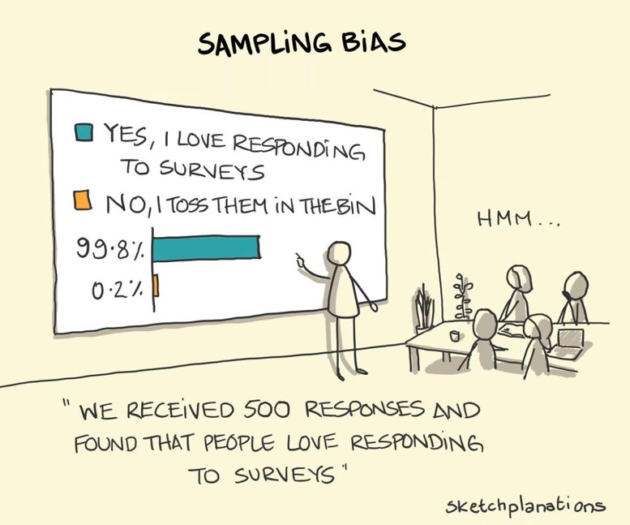
Sesgo de supervivencia
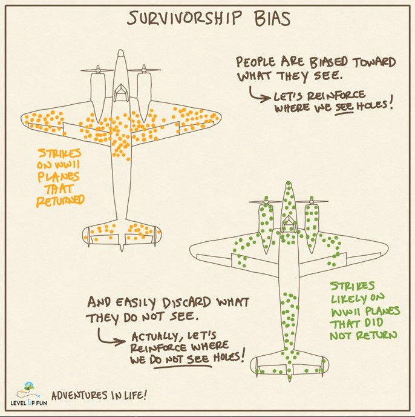
Sesgo de supervivencia
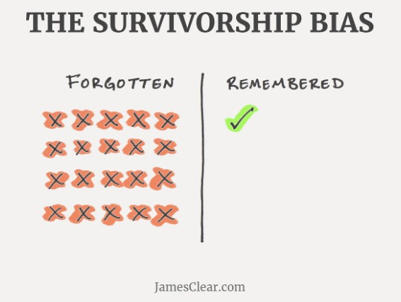
Fundamentos para
Encuestas
Evaluando una encuesta
¿Está basada en muestreo probabilístico?
Hay que preocuparse por:
- Error de cobertura
- Error de no-respuesta
- Error de medición
- (Error de muestreo)
Errores durante el proceso
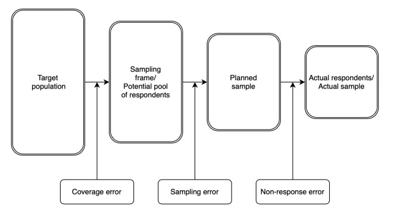
Recomendaciones generales
Usa un lenguaje simple, claro y neutral.
- Conoce a tu audiencia (por ejemplo, la diferencia entre adultos y adolescentes).
- No uses jerga ni siglas no definidas.
- No utilices dobles negativos o negativos difíciles de entender.
- Elimina todas las palabras innecesarias y mantén las preguntas cortas.
- Ten cuidado con las palabras sensibles o que puedan ser ofensivas.
Recomendaciones generales
Haga un pre-test/piloto:
identificar preguntas que no son claras, percepción del tiempo que tomará responder la encuesta.
- Pregunte a los encuestados que piensen en voz alta al momento de responder. ¿Qué errores podríamos evitar?
Haga la encuesta lo más
cortaposible. ¿Qué errores podríamos evitar?
- Solamente incluir preguntas que son relevantes para la pregunta que queremos responder con la encuesta.- Utilizar "branching" (ramificaciones) y filtros.
Gráficas, gráficas y más gráficas
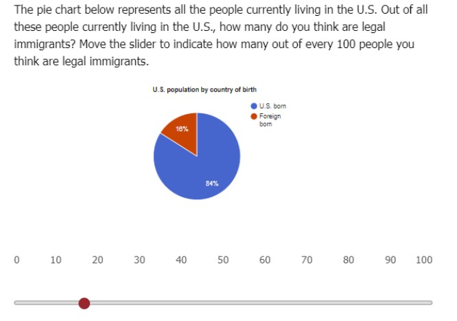
Gráficas, gráficas y más gráficas
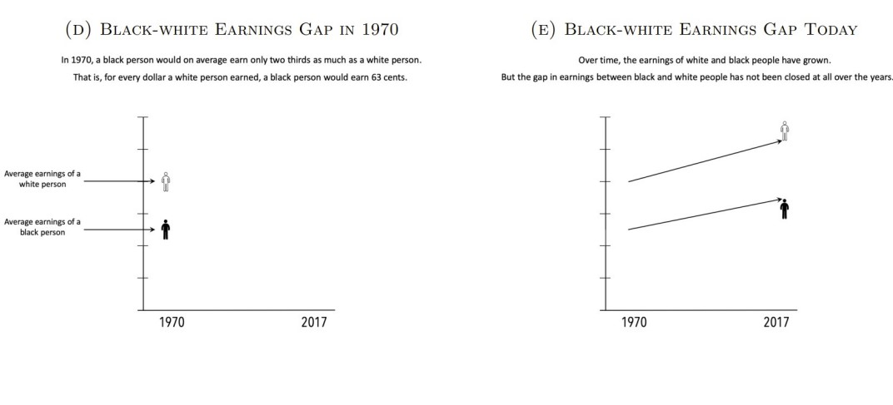
Orden de las preguntas
El orden de las preguntas debe guiarse por tres preocupaciones (a veces contradictorias):
Los encuestados suelen estar más comprometidos y menos cansados al principio.
Las preguntas que se hacen al principio pueden influir en las respuestas posteriores.
Los encuestados forman una opinión sobre tu encuesta desde el principio, y es crucial captar su interés.
Orden de las preguntas
El consejo común es hacer preguntas interesantes primero!
Si te preocupa la deserción, pregunta la información demográfica al principio.
Las preguntas sensibles deben ir más tarde en la encuesta.
Organiza tu encuesta de manera lógica y guía a los encuestados.
Si haces preguntas de filtro (por ejemplo, “¿Es usted trabajador autónomo?”), haz todas estas primero y luego las preguntas de seguimiento (por ejemplo, “¿Cuál es su ingreso por trabajo autónomo?”).”
Efectos del orden de las preguntas
¿Por qué ocurren los efectos del orden de las preguntas?
- Efectos de orden basados en lo cognitivo: primacía o efecto ancla.
- Efectos de orden basados en lo normativo: incluyen el deseo del encuestado de parecer: imparcial o justo, coherente y moderado.
Posibles soluciones:
No hay una solución general, pero hay que tener en cuenta estos efectos al diseñar la encuesta.
Se puede aleatorizar el orden de las preguntas o bloques, siempre y cuando no afecte negativamente el flujo de la encuesta.
Sesgo de deseabilidad social
Básicamente sucede cuando al encuestado le da vergüenza responder de cierta forma a cierta pregunta (presión social para responder de cierta forma):
- ¿Sí o No a la paz?
- ¿Ha consumido drogas ilícitas?
- ¿Ha sobornado a un funcionario público?
- ¿Ha robado en su lugar de trabajo?
Si el sesgo/presión para responder de cierta forma es significativo, esto resulta en error de medición (y en particular, en un error de medición sistemático).
Sesgo de deseabilidad social
Hay varias alternativas que pueden disminuir el sesgo:
- Encuestas telefónicas automatizadas.
- Encuestas por internet.
- Métodos para asegurar anonimidad: respuesta en privado y urnas.
Error de medida
Consideraciones Cuantitativas y Técnicas: Muchos estudios necesitarán incluir preguntas nuevas, creativas y, a veces, complejas. Por ejemplo, puede pedir a los encuestados que usen un deslizador para indicar su posición en una escala de distribución de ingresos. Para este tipo de preguntas:
- Realice varias pruebas piloto para asegurarse de que los encuestados las entienden.
- Automatice el código de su encuesta para garantizar que las cifras (por ejemplo, porcentajes) sumen correctamente 100.
- Asegúrese de que el diseño visual de la encuesta sea claro y efectivo.
Error de medición
La importancia del benchmarking: Suponga que encuentra que los encuestados estiman una determinada variable de manera incorrecta. ¿Esta percepción errónea es específica de esa variable o es la manifestación de un sesgo general?
- Ej: Las personas sobreestiman significativamente la proporción de inmigrantes desempleados, pero también sobreestiman la de no inmigrantes desempleados.
Un poco de
R
De regreso a los datos de Spotify
library(tidyverse)
library(janitor)
library(patchwork)
# Working directory
setwd(dir = "/Users/ccard/Dropbox/analitica_datos/2024-II/slides/lecture5/data")
# https://www.kaggle.com/code/lusfernandotorres/spotify-top-hits-2000-2019-eda/data
spotify <- read.csv("spotify_data.csv")
# veamos las dimensiones
dim(spotify)[1] 2000 18'data.frame': 2000 obs. of 18 variables:
$ artist : chr "Britney Spears" "blink-182" "Faith Hill" "Bon Jovi" ...
$ song : chr "Oops!...I Did It Again" "All The Small Things" "Breathe" "It's My Life" ...
$ duration_ms : int 211160 167066 250546 224493 200560 253733 284200 258560 271333 307153 ...
$ explicit : chr "False" "False" "False" "False" ...
$ year : int 2000 1999 1999 2000 2000 1999 2000 2000 1999 2001 ...
$ popularity : int 77 79 66 78 65 69 86 68 75 77 ...
$ danceability : num 0.751 0.434 0.529 0.551 0.614 0.706 0.949 0.708 0.713 0.72 ...
$ energy : num 0.834 0.897 0.496 0.913 0.928 0.888 0.661 0.772 0.678 0.808 ...
$ key : int 1 0 7 0 8 2 5 7 5 6 ...
$ loudness : num -5.44 -4.92 -9.01 -4.06 -4.81 ...
$ mode : int 0 1 1 0 0 1 0 1 0 1 ...
$ speechiness : num 0.0437 0.0488 0.029 0.0466 0.0516 0.0654 0.0572 0.0322 0.102 0.0379 ...
$ acousticness : num 0.3 0.0103 0.173 0.0263 0.0408 0.119 0.0302 0.0267 0.273 0.00793 ...
$ instrumentalness: num 1.77e-05 0.00 0.00 1.35e-05 1.04e-03 9.64e-05 0.00 0.00 0.00 2.93e-02 ...
$ liveness : num 0.355 0.612 0.251 0.347 0.0845 0.07 0.0454 0.467 0.149 0.0634 ...
$ valence : num 0.894 0.684 0.278 0.544 0.879 0.714 0.76 0.861 0.734 0.869 ...
$ tempo : num 95.1 148.7 136.9 120 172.7 ...
$ genre : chr "pop" "rock, pop" "pop, country" "rock, metal" ...Spotify Data - Descriptivas
Spotify Data - Descriptivas
Spotify Data - Función Aggregate
# Funcion "aggregate" para descriptivas por grupo
aggregate(popularity ~ explicit , data=spotify, mean) explicit popularity
1 False 59.25949
2 True 61.48457# Agreguemos otra categoría
spotify <- spotify %>%
mutate(hip_hop_genre = ifelse(grepl("hip hop",
genre, ignore.case = TRUE), TRUE, FALSE))
aggregate(popularity ~ explicit + hip_hop_genre , data=spotify, mean) explicit hip_hop_genre popularity
1 False FALSE 58.62295
2 True FALSE 57.66935
3 False TRUE 61.25071
4 True TRUE 62.59251Spotify Data - Función Aggregate
# La funcion también funciona con las siguientes descriptivas:
aggregate(popularity ~ explicit , data=spotify, median)
aggregate(popularity ~ explicit , data=spotify, sd)
aggregate(popularity ~ explicit , data=spotify, var)
aggregate(popularity ~ explicit , data=spotify, min)
aggregate(popularity ~ explicit , data=spotify, max)
aggregate(popularity ~ explicit , data=spotify, IQR)Ejercicio
Usando la base de datos airbnb_ny_2019:
- Revisen las dimensiones de la base de datos
- ¿Qué información tiene?
- Elijan un par de variables y revisen las estadísticas descripticas
Spotify Data - Histograma
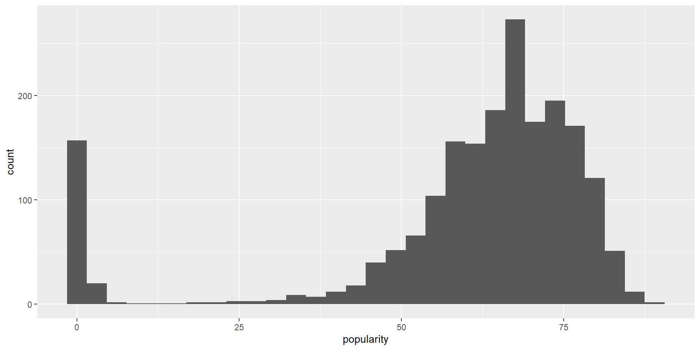Spotify Data - Histogramas
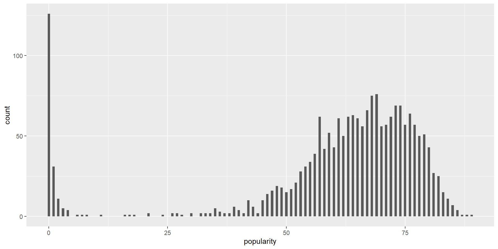Spotify Data - Histogramas
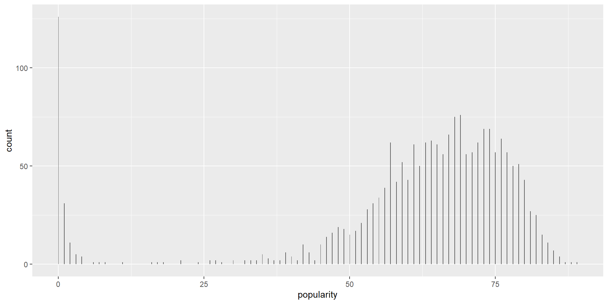Spotify Data - Histogramas
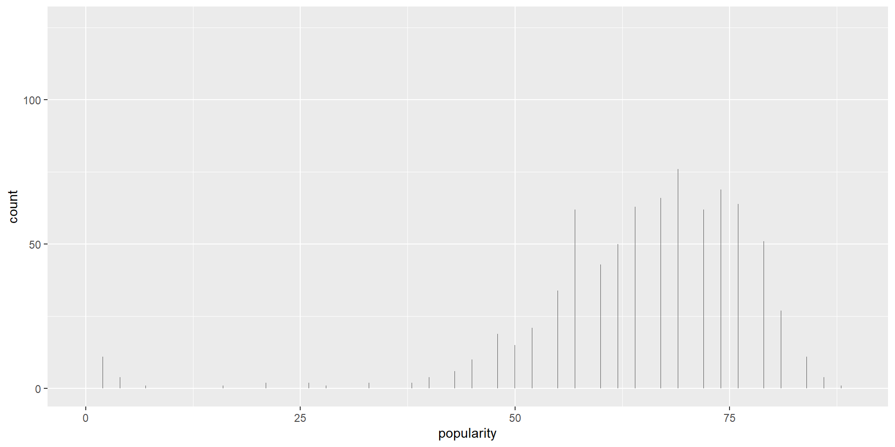Spotify Data - Diagrama de Caja
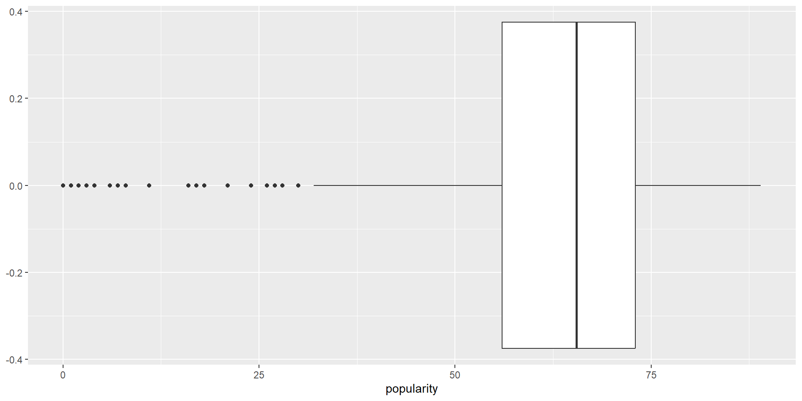Spotify Data - Diagrama de Caja
Spotify Data - Diagrama de Caja
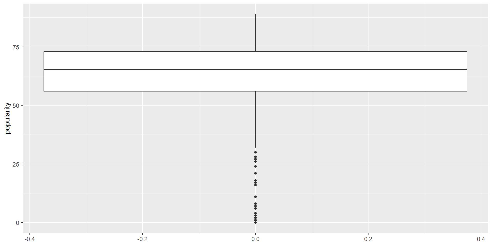Spotify Data - Diagrama de Caja
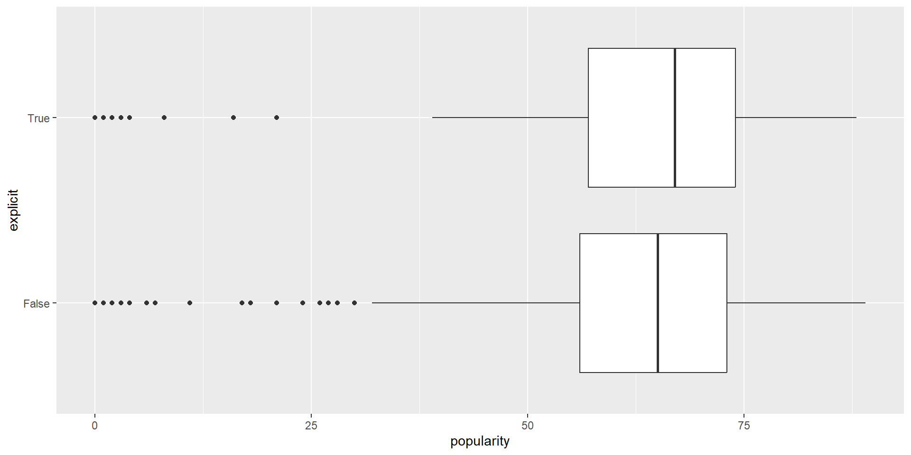Spotify Data - Diagrama de Caja
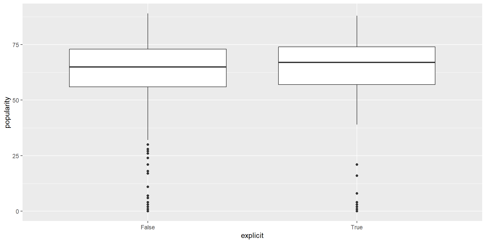Spotify Data - Diagrama de Caja
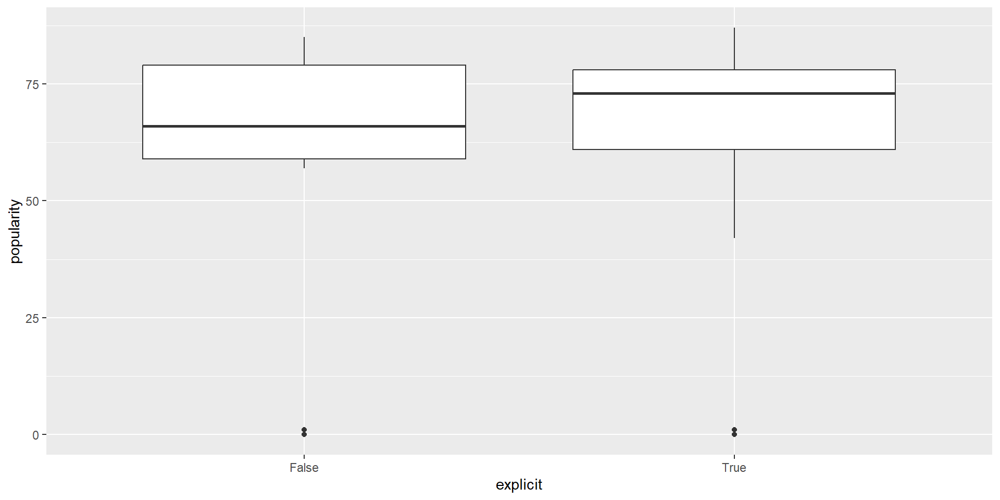Spotify Data - Patchwork
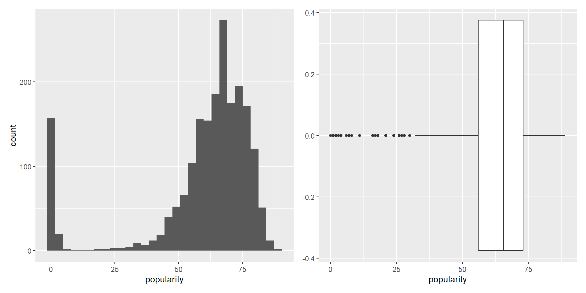Ejercicio
Usando la base de datos airbnb_ny_2019:
- Hagan un histograma de la variable “price”. ¿ qué nos dice?
- Hagan un diagrama de caja de la variable “number_of_reviews” ¿ qué nos dice?
- Hagan un histograma y un diagrama de caja usando el paquete patchwork para alguna de las dos variables
Spotify Data - Diagrama de Dispersión
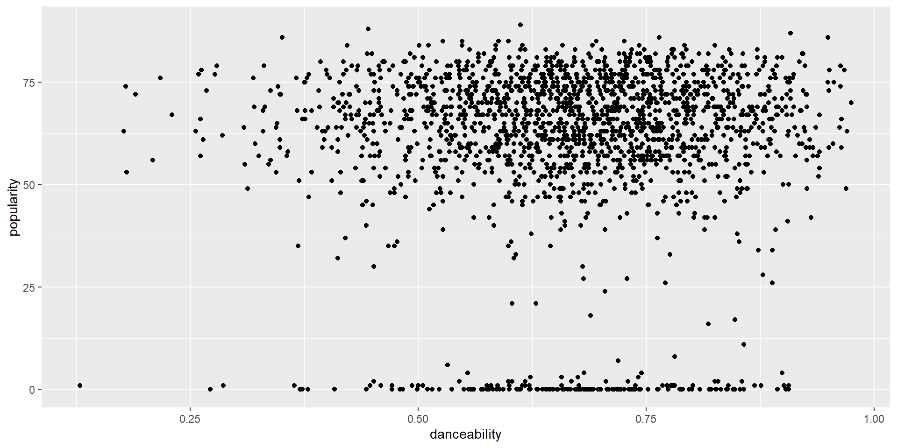Spotify Data - Diagrama de Dispersión
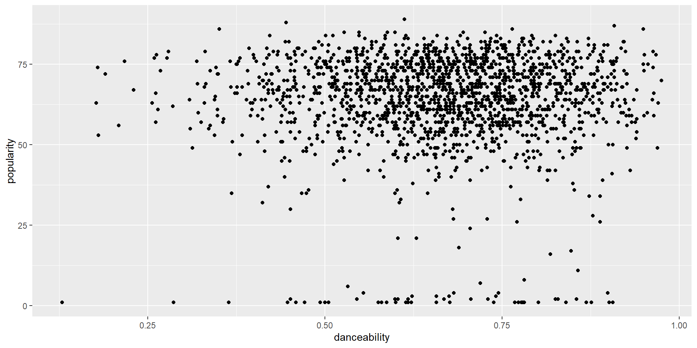Spotify Data - Diagrama de Dispersión
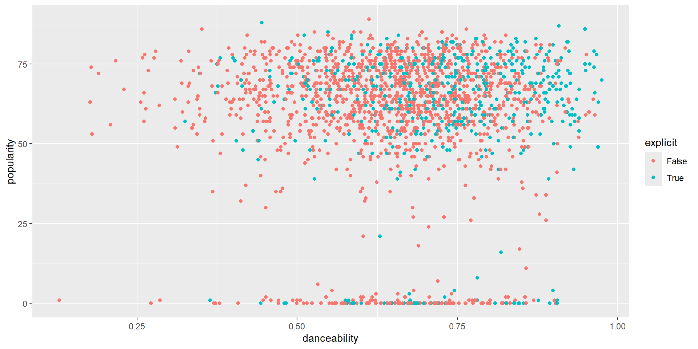Spotify Data - Diagrama de Dispersión
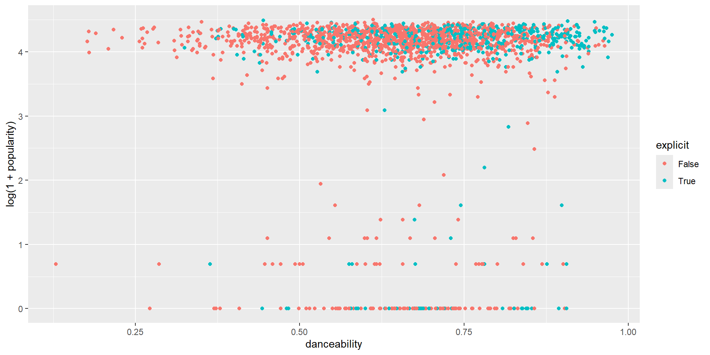Spotify Data - Diagrama de Dispersión
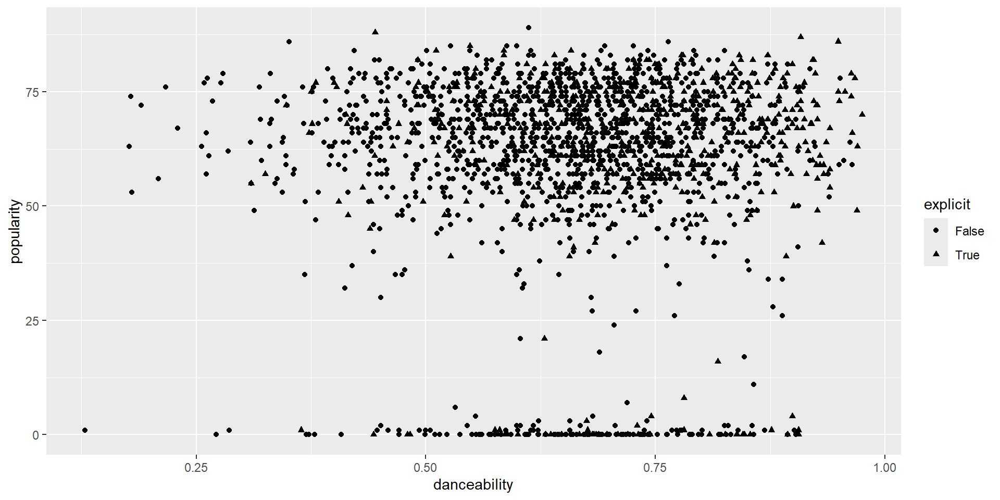Spotify Data - Diagrama de Dispersión
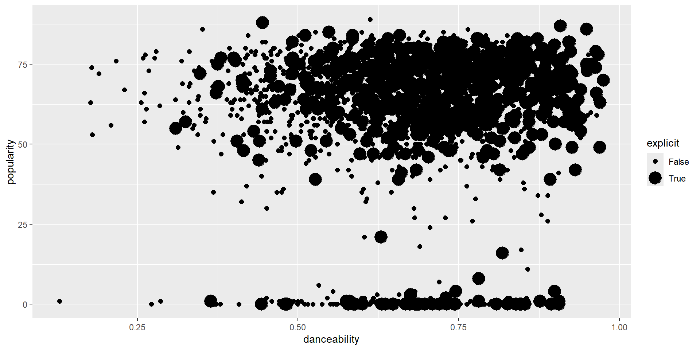Spotify Data - Diagrama de Dispersión
Ejercicio
Usando la base de datos airbnb_ny_2019:
- Hagan un diagrama de dispersión para las variables “price” y “number_of_reviews”. ¿Qué nos dice?
- Elijan o construyan una tercer variables y analicen las 3 variables a la vez.